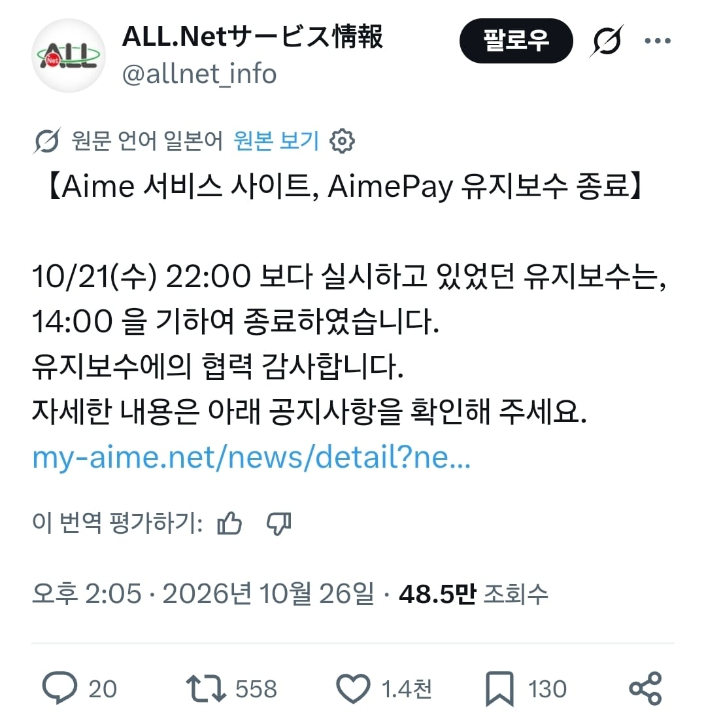
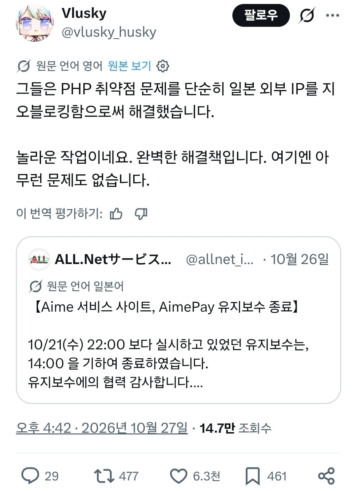
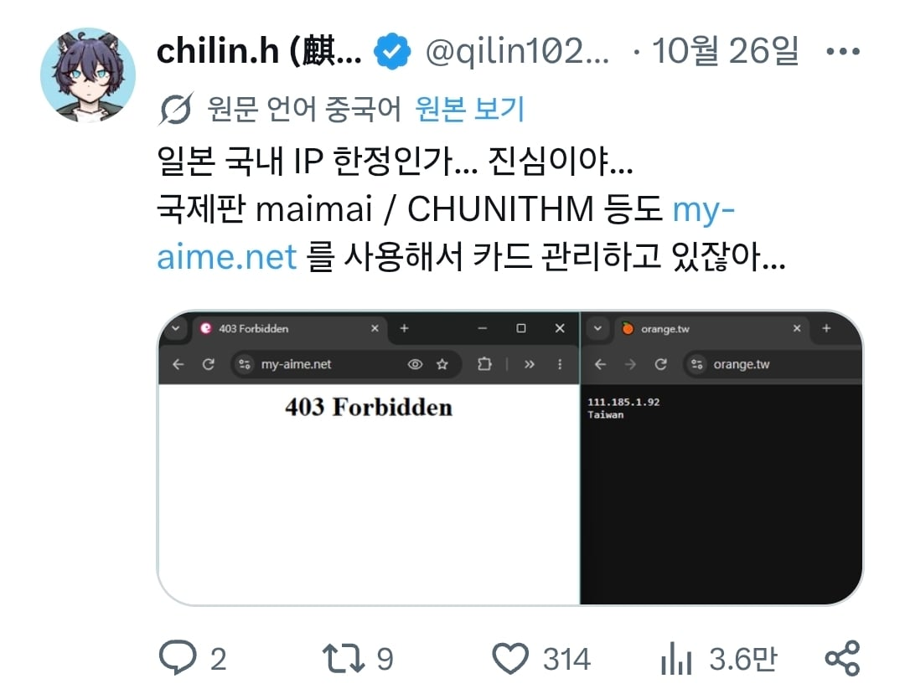
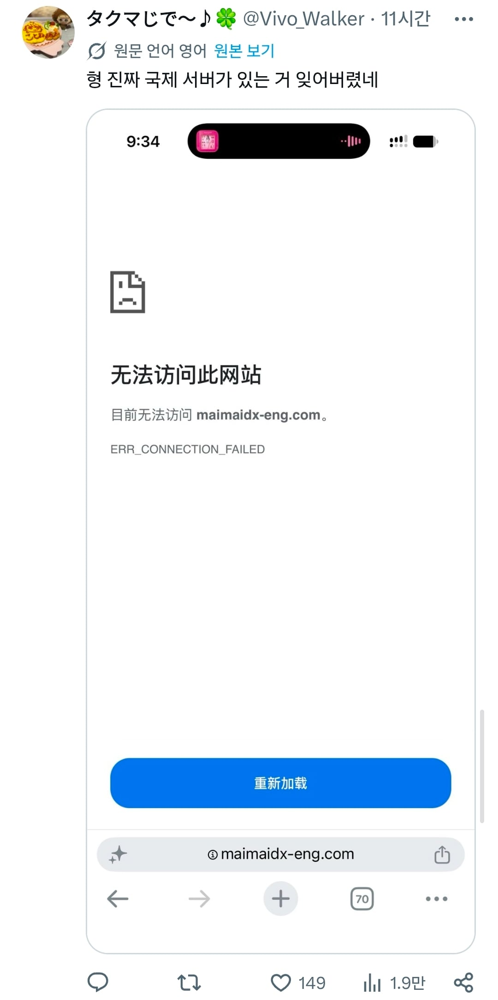
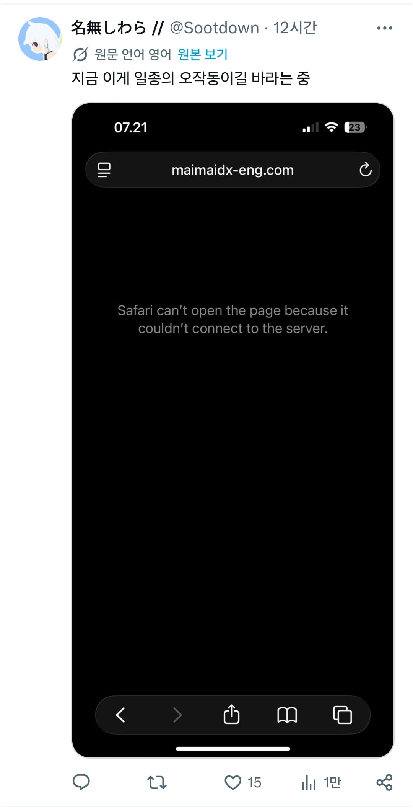
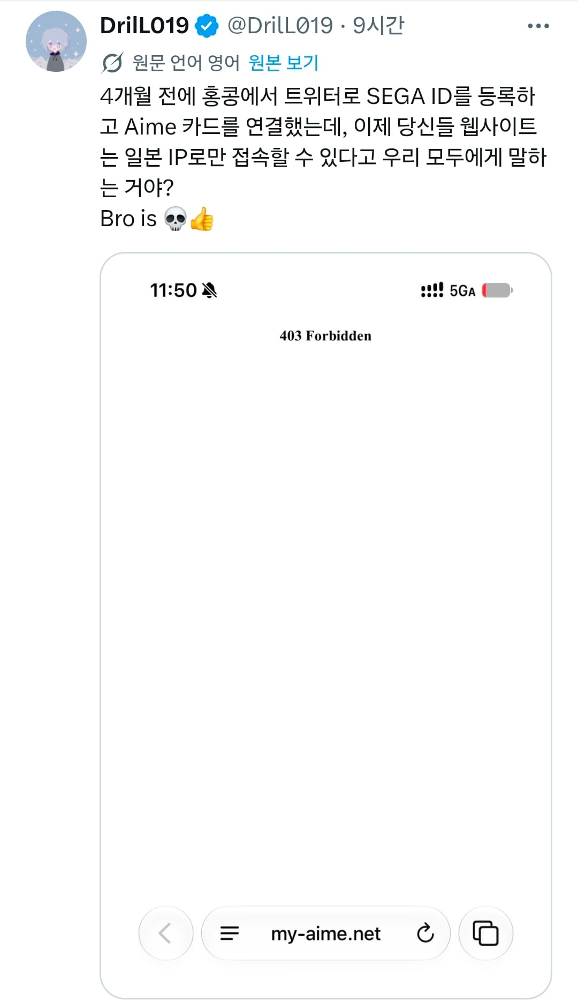

오락실에서 유저데이터 저장서비스를 지원하는 Aime
최근 PHP 보안위험으로 점검에 들어갔다가
결제서비스인 Aime pay와 서비스 사이트 만큼은 며칠내내 점검중이다가
마침내 패치종료를 하게됐는데





놀랍게도 그 해결책은 해외 IP를 싹 차단하는 것이었고
원래 있었던 Aime의 글로벌 사이트는 외국 이용자들이 접근조차 못하게 됐다고 한다...
놀랍다 일본IT!
VPN 적극 장려 ㅋㅋㅋ